Your Apple Music, on a shelf of CDs.
Flip through your albums like a real shelf, open a case to see the songs inside, and play from a record you can hold. On iPhone, iPad and Mac, upright or sideways.
Built for landscape
Most music apps on iPhone stand upright and stay that way. Melow is designed for both. Sideways, your shelf becomes a full-width row of albums to flick through, an open case floats over the row, and the player sets the record beside its lyrics.
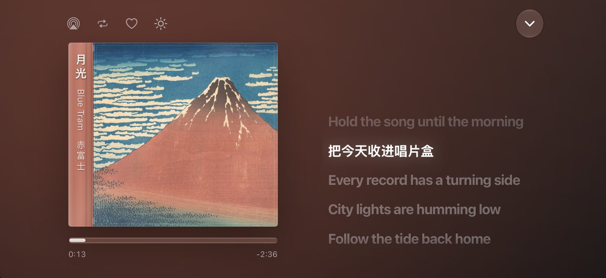
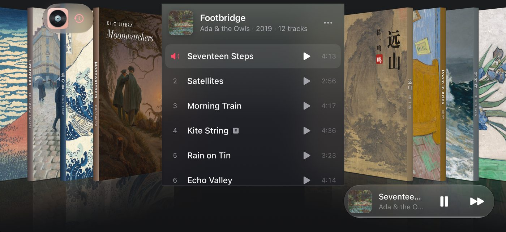
The shelf
Albums and playlists stand as real jewel cases, each spine printed in its cover's own colour. Tap the case in front of you and its lid swings open on the hinge, with the songs inside.
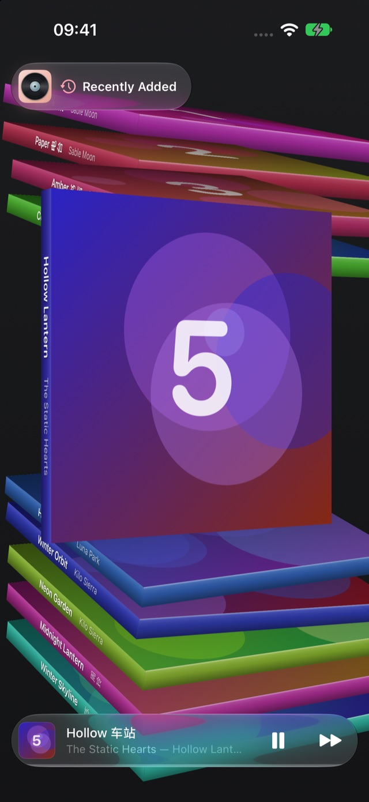
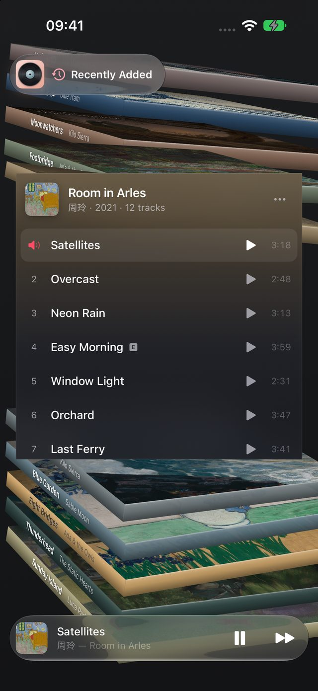
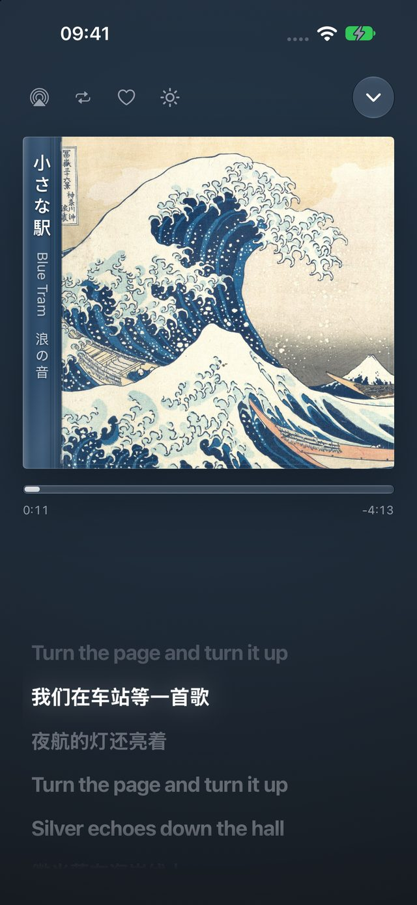
The record is the player
The whole screen becomes the record: the song's title runs down the spine, the progress sits tight under the case, and lyrics follow the music with the current line lit. On iPad there's room for the record and its lyrics side by side.
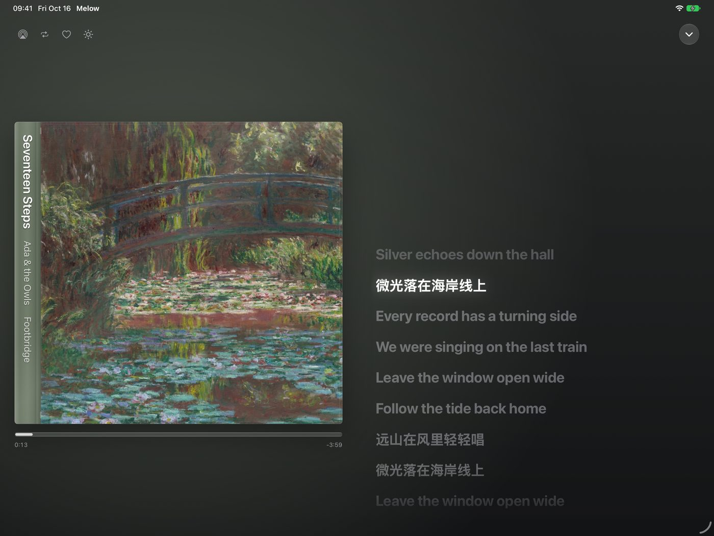
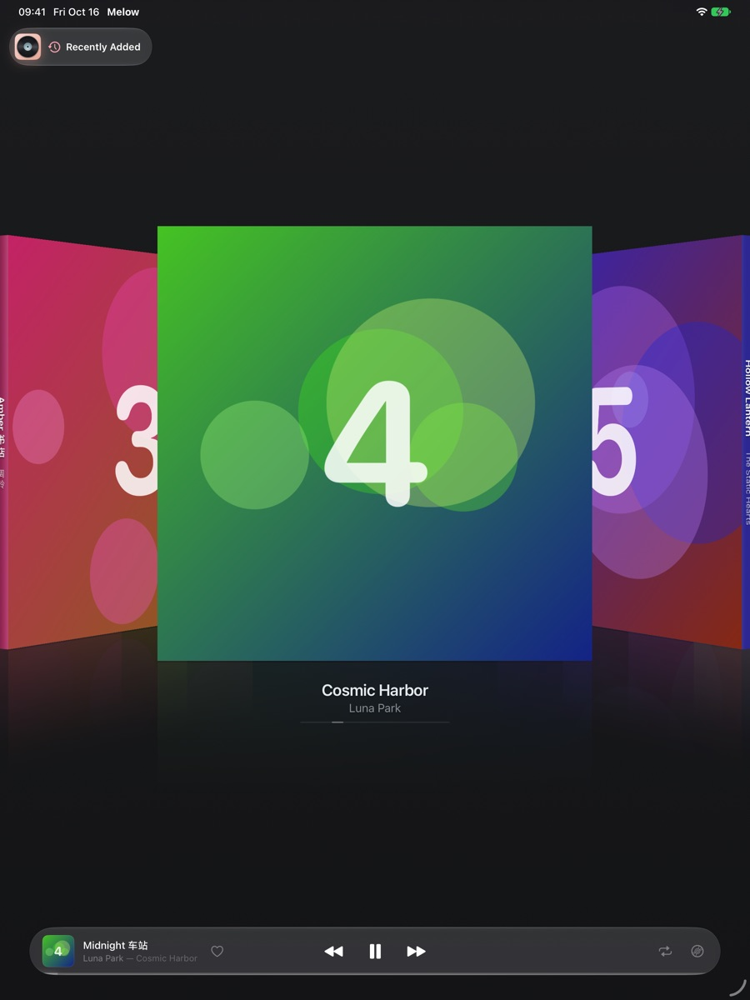
Leave it playing
Tap the sun at the top of the player and your iPhone or iPad stays awake while the record plays, so the cover and its lyrics keep showing on a desk, a nightstand or a kitchen counter. It's off until you want it, and the screen sleeps as usual again once you close the player.
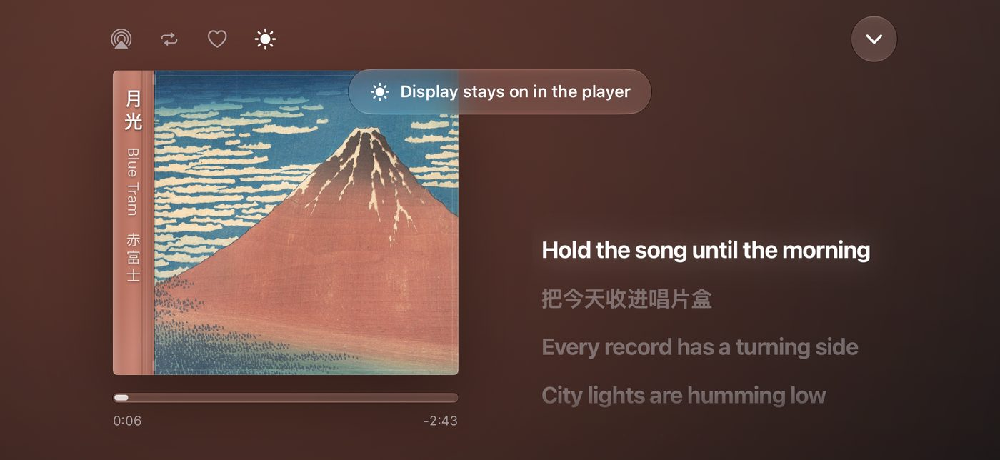
On the Mac
No title bar, nothing in the way. The shelf bar folds into the corner until your pointer comes near, the flow follows your trackpad, mouse wheel and arrow keys, and the player floats previous, play and next over the cover in clear glass.
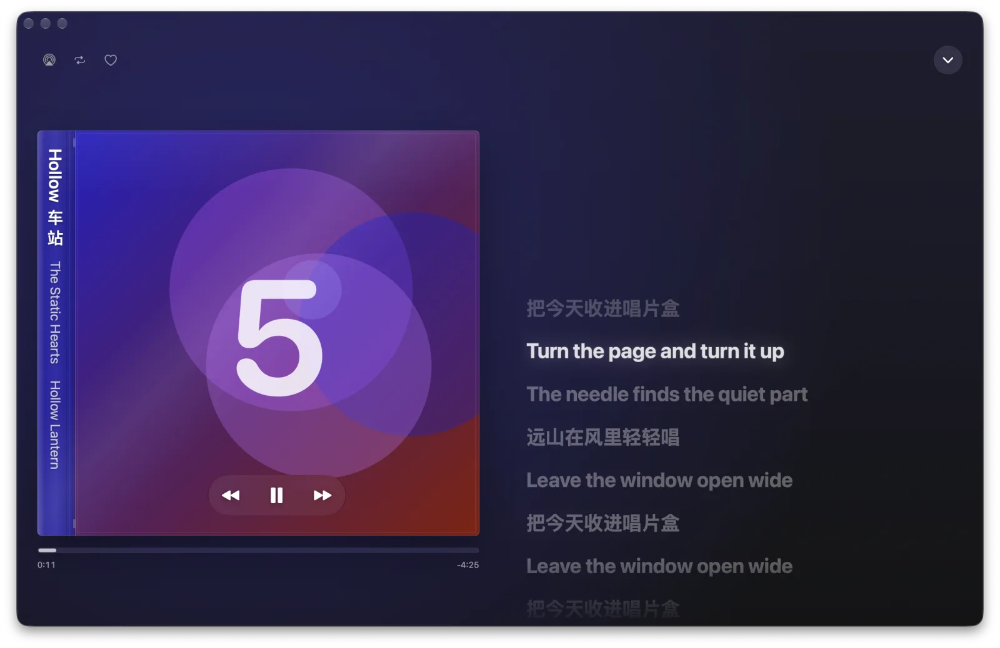
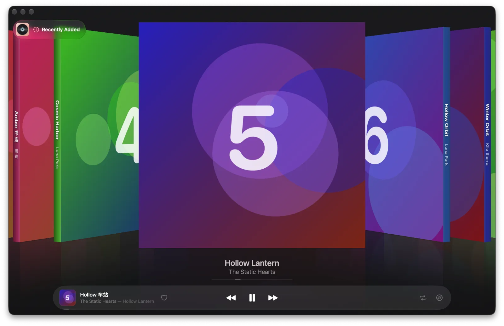
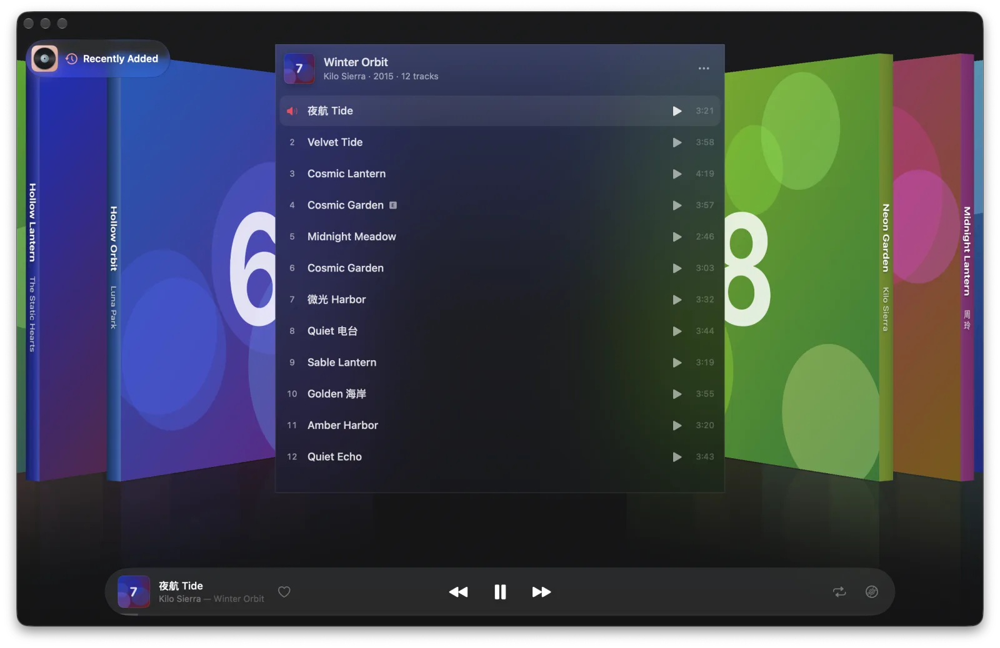
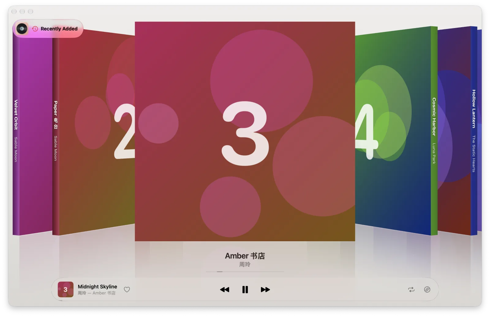
Made for your language
Melow speaks English, Español, Français, 한국어, 简体中文, 繁體中文 and 日本語. On every spine, Chinese, Japanese and Korean titles stand upright, one character above the next, while Latin titles run along the side, just like the spines on a record shop shelf. In light or dark.
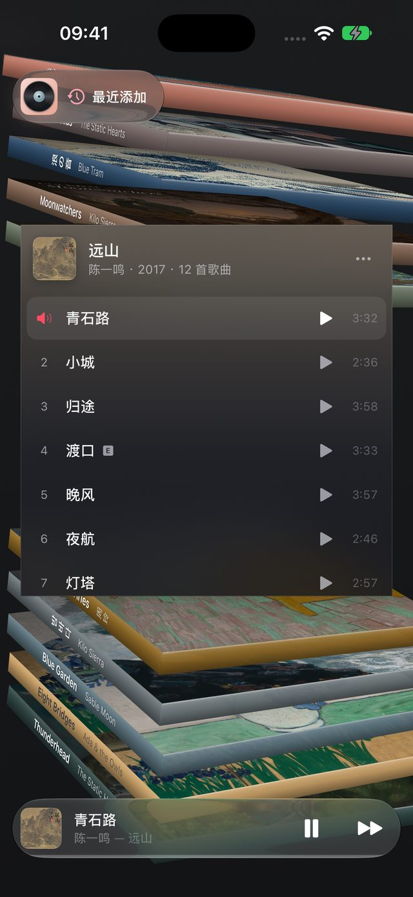
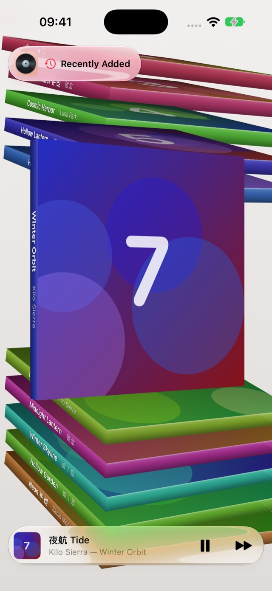
And more
The album playing as a jewel case on your Home Screen, a shelf of spines that opens any album, and Lock Screen sizes.
Play or pause from Control Center, or just ask: “Play Recently Added in Melow.”
Timed lyrics light up line by line; tap one to jump there.
Play Next, Add to Queue and Add to Library, from any song or album.
One purchase for every device. On the Mac, the shelf follows your trackpad, mouse and keys.
Melow plays through your own Apple Music. No sign-up, no ads, no tracking.
Melow Pro
Then keep it the way you like: by the month, or once for good. One purchase covers your iPhone, iPad and Mac.
All of Melow, renewed every month.
Melow Pro for good, with one payment.
Melow works with Apple Music. Your library plays with or without an Apple Music subscription; the Apple Music catalog needs one. Melow Pro is separate from Apple Music.
Screens show Melow's built-in demo albums: made-up artists and songs, with covers from public-domain paintings in the open-access collections of The Metropolitan Museum of Art and the Art Institute of Chicago. In your copy, the shelf is your own Apple Music library.